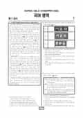

문제지

전국연합학력평가 · 시·도교육청 주관
2024년 10월 고1 학력평가 국어 1등급컷은 원점수 89점(추정), 표준점수 최고점은 145점입니다.
원점수 1등급컷은 공식 발표값이 아니라 EBSi·입시기관 값입니다. 등급별 값은 등급컷 표, 출처 구분은 데이터 원칙에 있습니다.

시험지를 먼저 풀어 보세요. 등급컷·표준점수·난이도는 흐리게 가려 뒀어요.
| 등급 | 원점수 | 표준점수 | 백분위 | 누적 |
|---|---|---|---|---|
| 1 | 89 | 136 | 96 | 4.81% |
| 2 | 80 | 128 | 89 | 13.17% |
| 3 | 68 | 117 | 76 | 25.63% |
| 4 | 55 | 105 | 60 | 42.12% |
| 5 | 40 | 92 | 39 | 60.85% |
| 6 | 29 | 82 | 23 | 77.66% |
| 7 | 22 | 76 | 11 | 89.72% |
| 8 | 15 | 70 | 3 | 96.41% |
등급별 컷 · 입시기관 3곳 원점수 추정 종합(메가스터디·종로학원·대성마이맥) · 만점 100점
| 등급 | 표준점수 이상 | 인원(명) | 비율 |
|---|---|---|---|
| 1 | 136 | 14,736 | 4.46% |
| 2 | 128 | 22,286 | 6.74% |
| 3 | 117 | 41,802 | 12.65% |
| 4 | 105 | 55,091 | 16.67% |
| 5 | 92 | 67,548 | 20.44% |
| 6 | 82 | 55,221 | 16.71% |
| 7 | 76 | 37,910 | 11.47% |
| 8 | 70 | 27,379 | 8.28% |
| 9 | 56 | 8,515 | 2.58% |
시·도교육청 공개 자료
출처: 시·도교육청이 공개한 전국연합학력평가 성적 분석·통계자료(공개 자료 보기).
EBSi 응답자 기준으로 가장 많이 틀린 문항은 13번(2점)이고, 오답률은 76.1%입니다. 상위 15문항 중 1문항은 정답보다 한 오답을 고른 사람이 더 많았습니다(13번: 정답 ⑤ 23.9%, ① 27.7%). 오답률 50%를 넘은 문항은 7개입니다.
| 순위 | 문항 | 배점 | 오답률 | 정답 | 많이 고른 오답 |
|---|---|---|---|---|---|
| 1 | 13번 | 2점 | 76.1% | ⑤ | ① 27.7% |
| 2 | 30번 | 3점 | 63.2% | ④ | ③ 26.8% |
| 3 | 43번 | 2점 | 62.2% | ② | ③ 18.9% |
| 4 | 37번 | 3점 | 59.7% | ⑤ | ④ 23.8% |
| 5 | 42번 | 2점 | 54.6% | ② | ③ 18.6% |
| 6 | 45번 | 3점 | 51.8% | ⑤ | ① 17.9% |
| 7 | 25번 | 3점 | 51.5% | ④ | ③ 26.8% |
| 8 | 33번 | 3점 | 48.7% | ② | ⑤ 20.6% |
| 9 | 44번 | 2점 | 48.5% | ⑤ | ④ 16.6% |
| 10 | 29번 | 2점 | 47.2% | ③ | ② 16.4% |
| 11 | 34번 | 2점 | 45.3% | ④ | ③ 22.8% |
| 12 | 12번 | 3점 | 44.5% | ③ | ⑤ 15.6% |
| 13 | 28번 | 2점 | 43.1% | ④ | ③ 19.4% |
| 14 | 41번 | 3점 | 42.3% | ⑤ | ④ 17.7% |
| 15 | 40번 | 2점 | 38.6% | ② | ③ 11.7% |
EBSi 가채점 응답자 기준 · 전 문항 중 오답률 상위 15문항
출처: EBSi 역대 등급컷·오답률 공개 화면. 가채점에 참여한 EBSi 이용자 응답이라 전체 응시자 정답률과는 다를 수 있습니다.
발행 기관: 시·도교육청(전국연합학력평가). 파일 위치: 이 사이트가 보관한 사본. 저작권은 발행 기관에 있습니다. 원본과 다르거나 게시 중단이 필요하면 연락처로 알려 주세요. 등급컷 출처 구분은 데이터 원칙에서 설명합니다.
막대 색은 역대 대비 난이도 · 진한 막대가 이 시험 · 막대를 누르면 그 회차로 이동
| 회차 | 1등급컷 | 표점 최고 | 1등급 표점 | 난이도 |
|---|---|---|---|---|
| 10월 학평2024년 고1이 시험 | 89 | 145 | 136 | 어려움 |
| 9월 학평2024년 고1 | 87 | 148 | 136 | 어려움 |
| 6월 학평2024년 고1 | 87 | 146 | 134 | 보통 |
| 3월 학평2024년 고1 | 91 | 141 | 131 | 매우 쉬움 |
| 9월 학평2023년 고1 | 84 | 150 | 135 | 매우 어려움 |
| 6월 학평2023년 고1 | 87 | 149 | 136 | 보통 |
| 3월 학평2023년 고1 | 95 | 136 | 131 | 매우 쉬움 |
| 11월 학평2022년 고1 | 88 | 145 | 134 | 보통 |
| 9월 학평2022년 고1 | 82 | 155 | 136 | 매우 어려움 |
| 6월 학평2022년 고1 | 91 | 142 | 134 | 쉬움 |
국어는 교육청 채점 결과 1등급 구분 표준점수가 136점, 최고점이 145점(877명)으로 9월(1등급 136점, 최고점 148점)과 1등급 컷이 같았습니다. 응시자는 330,488명, EBSi 가채점 응답자 기준 오답률 50%를 넘은 문항은 7개였습니다.
가장 많이 틀린 13번(2점, 76.1%)은 '삼촌께서 내가 드린 신문을 읽고 계시다' 등 <보기>의 ㉠~㉤에 쓰인 높임·시제 같은 문법 요소를 분석하는 문항이었습니다. 27~30번은 외부 하중을 받는 구조물의 부재와 그 허용 범위를 다룬 지문으로, 항복응력 140 MPa·극한응력 150 MPa인 연성 재료 A 등을 비교한 학습 자료 30번(3점, 63.2%)이 어려웠습니다.
16~21번은 가해자의 고의 또는 과실로 손해를 끼친 민법상 불법행위(가)와, 여러 가해자가 함께 일으킨 공동불법행위에서 피해자 과실만큼 배상액을 줄일 수 있는지를 다룬(나) 지문이었습니다. 22~26번은 도덕적 이해가 자동으로 도덕적 행동을 이끈다고 본 콜버그의 인지 발달 이론을 비판적으로 살핀 도덕 심리학 지문으로, 25번(51.5%)이 50%를 넘었습니다.
문학은 박두진 「낙엽송」과 박남수 「소등」(31~33번), 늙은 농부에게 농사가 천하의 근본이라 노래하는 정해정 「민농가」와 유희 「박장대」(34~37번), 구십만 원으로 독채 전세를 구하러 다니는 박완서 「서글픈 순방」(38~41번), 계모의 모함으로 강물에 몸을 던진 정 소저와 정혼자 조무의 「현몽쌍룡기」(42~45번)였습니다.
사대부를 통해 조선 후기 사회의 문제를 바라본다는 <보기>로 (가), (나)를 감상하는 37번(59.7%), 「현몽쌍룡기」의 내용을 확인하는 43번(62.2%)이 문학에서 어려웠습니다. 화법·작문은 조선 궁궐의 현판을 소개한 문화 해설(1~3번), 청소년기 또래 압력을 다룬 교지 글 회의(4~7번), 염화물계 제설제 사용 문제를 다룬 지역 신문 기고(8~10번)였습니다.